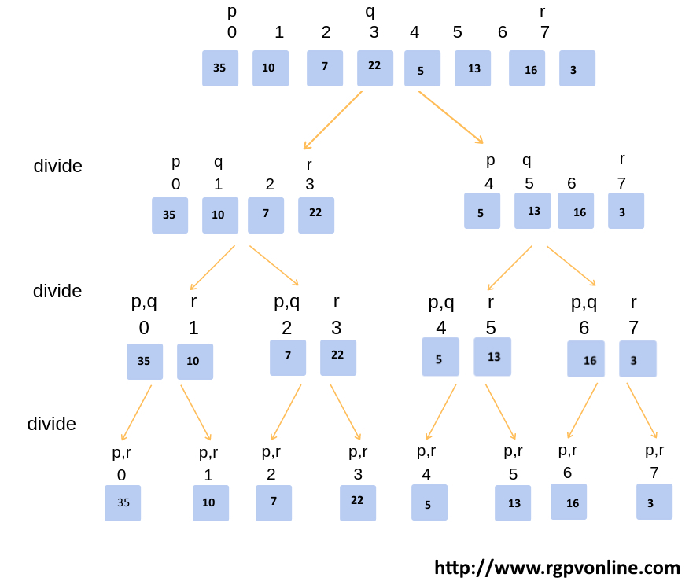
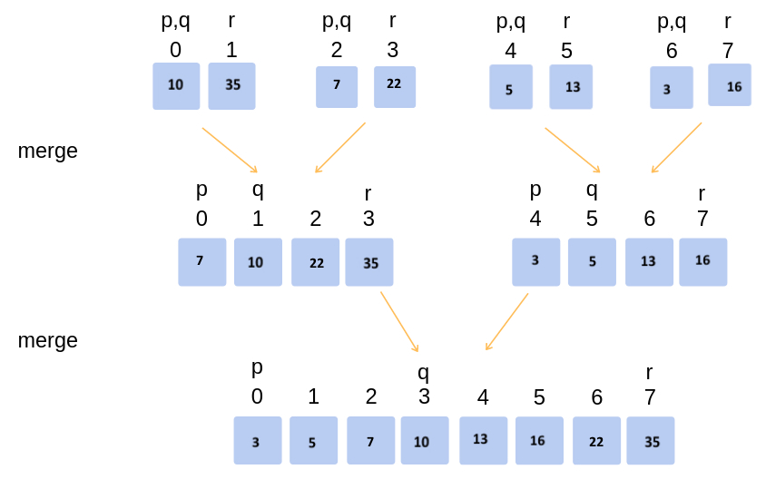
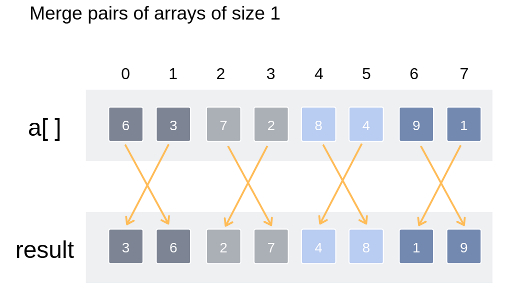
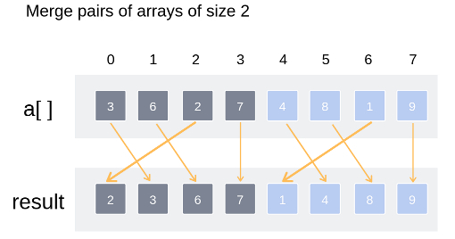
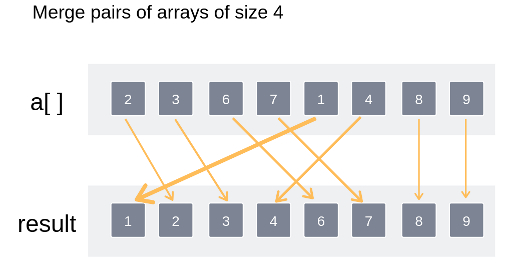

Q.16: Write the procedure of Merge sort and sort the given array of 8 elements using merge sort 35, 10,7,22, 5, 13, 16, 3.
Answer:
Merge Sort Algorithm
Merge sort is one of the most efficient sorting algorithms. It works on the principle of Divide and Conquer. Merge sort repeatedly breaks down a list into several sublists until each sublist consists of a single element and merging those sublists in a manner that results into a sorted list.
A merge sort works as follows:
Top-down Merge Sort Implementation:
The top-down merge sort approach is the methodology which uses recursion mechanism. It starts at the Top and proceeds downwards, with each recursive turn asking the same question such as “What is required to be done to sort the array?” and having the answer as, “split the array into two, make a recursive call, and merge the results.”, until one gets to the bottom of the array-tree.
Example: Let us consider an example to understand the approach better.
1. Divide the unsorted list into n sublists, each comprising 1 element (a list of 1 element is supposed sorted).
Top-down
Implementation
2.
Repeatedly merge sublists to produce newly sorted sublists
until there is only 1 sublist remaining. This will be the sorted
list.
Merging of two lists done as follows:
The first element of
both lists is compared. If sorting in ascending order, the smaller
element among two becomes a new element of the sorted list. This
procedure is repeated until both the smaller sublists are empty and
the newly combined sublist covers all the elements of both the
sublists.
Merging of two lists
Bottom-Up Merge Sort Implementation:
The Bottom-Up merge
sort approach uses iterative methodology. It starts with the
“single-element” array, and combines two adjacent elements and also
sorting the two at the same time. The combined-sorted arrays are
again combined and sorted with each other until one single unit of
sorted array is achieved.
Example: Let us
understand the concept with the following example.
1.
Iteration (1)
Merge pairs of
arrays of size 1
2.
Iteration (2)
Merge pairs of
arrays of size 2
3.
Iteration (3)
Merge pairs of
arrays of size 4
Thus the entire
array has been sorted and merged.




